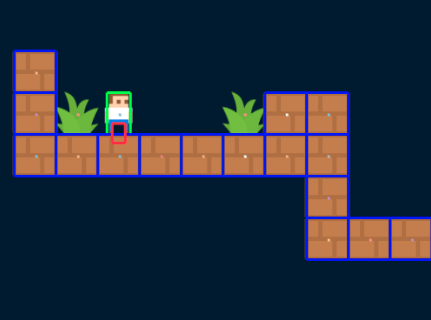
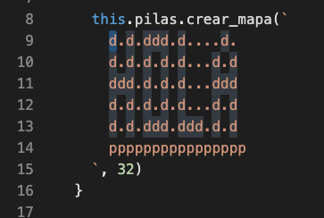

Los escenarios de muchos videojuegos se construyen utilizando una técnica llamada tiles, que consiste en utilizar pequeños bloques llamados “tiles” para crear niveles grandes.
Por ejemplo, en esta imagen se puede ver un nivel diseñado usando esta técnica:

Esta técnica es muy útil porque permite crear escenarios de manera sencilla. Simplemente repitiendo bloques y reutilizando actores.
Pilas incluye dos funciones para que podamos hacer niveles de esta forma. Por un lado tenemos una función para definir los bloques que vamos a utilizar y luego una función para dibujar el escenario en pantalla.
El primer paso es definir qué actores vamos a utilizar como bloques, tenemos que tener esos actores en cualquiera de las escenas.
Por ejemplo, aquí tengo dos actores, uno llamado “dado” y el otro “plataforma”:
Si quiero crear un nivel usando estos actores tengo que indicarle a pilas cómo llamar a estos actores en la definición de un mapa:
De esta forma, pilas sabrá que cada que vez que usemos la letra d en un mapa nos estaremos refiriendo a un dado y cada vez que usemos la letra p estaremos refiriéndonos a una plataforma.
Ahora, imagina que queremos dibujar el mensaje “HOLA” usando dados y luego poner una plataforma debajo del mensaje así:

Para esto podemos usar la función pilas.crear_mapa y las teclas d y p que definimos antes así:
this.pilas.crear_mapa(`
d.d.ddd.d....d.
d.d.d.d.d...d.d
ddd.d.d.d...ddd
d.d.d.d.d...d.d
d.d.ddd.ddd.d.d
pppppppppppppppp
`, 32)Oh, un pequeño consejo: suele ayudarte a leer mejor el mapa en texto si seleccionar el caracter que estás ingresando con el editor:

También puede ayudarte a mejorar la legibilidad si usas separadores como “.”, “-” o espacios en aquellos lugares donde no necesitas dibujar un actor.